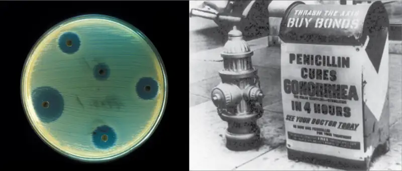
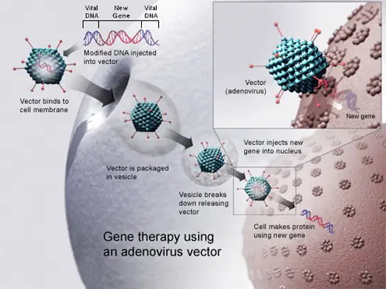
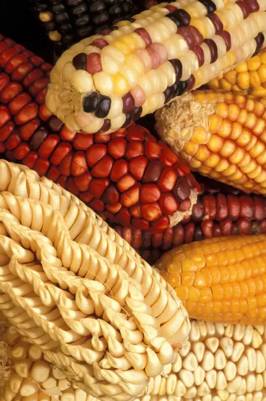
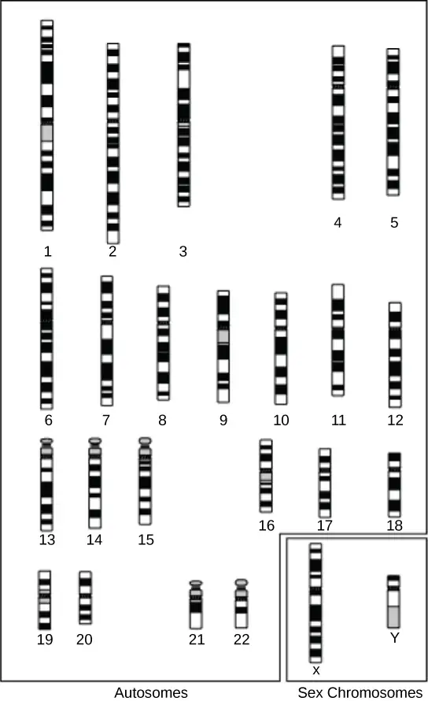
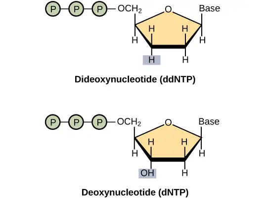
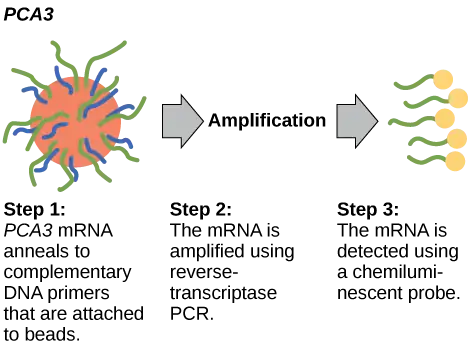
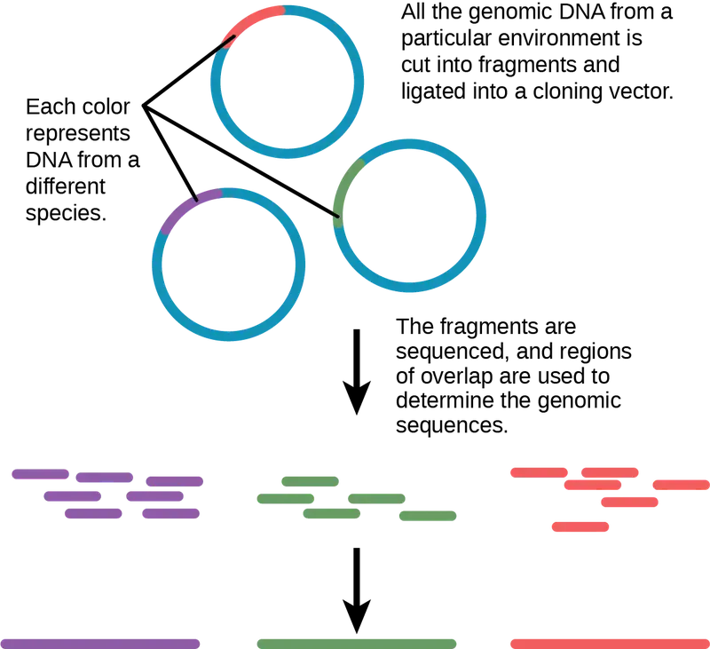

Chapter 17: Biotechnology and Genomics¶
Introduction¶
![The left part of this image is an illustration of a gene chip. The chip is a grid comprising nine columns and 21 rows. Most cells in the grid are blue, but some are green, yellow, or red. The green, yellow, or red color shows that D N A has hybridized with the chip, indicating the presence of a particular gene. The right part of the image is a satellite image of Spain, with a small region outlined in a square. This image is meant to reinforce the concept that, like regions of the world, D N A can be mapped.](img/figure-b17-00-01-b67b.webp)
The study of nucleic acids began with the discovery of DNA, progressed to the study of genes and small fragments, and has now exploded to the field of genomics. Genomics is the study of entire genomes, including the complete set of genes, their nucleotide sequence and organization, and their interactions within a species and with other species. DNA sequencing technology has contributed to advances in genomics. Just as information technology has led to Google maps that enable people to obtain detailed information about locations around the globe, researchers use genomic information to create similar DNA maps of different organisms. These findings have helped anthropologists to better understand human migration and have aided the medical field through mapping human genetic diseases. Genomic information can contribute to scientific understanding in various ways and knowledge in the field is quickly growing.
17.1 Biotechnology¶
Learning Objectives
By the end of this section, you will be able to do the following:
- Describe gel electrophoresis
- Explain molecular and reproductive cloning
- Describe biotechnology uses in medicine and agriculture
Biotechnology is the use of biological agents for technological advancement. Biotechnology was used for breeding livestock and crops long before people understood the scientific basis of these techniques. Since the discovery of the structure of DNA in 1953, the biotechnology field has grown rapidly through both academic research and private companies. The primary applications of this technology are in medicine (vaccine and antibiotic production) and agriculture (crop genetic modification in order to increase yields). Biotechnology also has many industrial applications, such as fermentation, treating oil spills, and producing biofuels (Figure 17.2).

Basic Techniques to Manipulate Genetic Material (DNA and RNA)¶
To understand the basic techniques used to work with nucleic acids, remember that nucleic acids are macromolecules made of nucleotides (a sugar, a phosphate, and a nitrogenous base) linked by phosphodiester bonds. The phosphate groups on these molecules each have a net negative charge. An entire set of DNA molecules in the nucleus is called the genome. DNA has two complementary strands linked by hydrogen bonds between the paired bases. Exposure to high temperatures (DNA denaturation) can separate the two strands and cooling can reanneal them. The DNA polymerase enzyme can replicate the DNA. Unlike DNA, which is located in the eukaryotic cells' nucleus, RNA molecules leave the nucleus. The most common type of RNA that researchers analyze is the messenger RNA (mRNA) because it represents the protein-coding genes that are actively expressed. However, RNA molecules present some other challenges to analysis, as they are often less stable than DNA.
DNA and RNA Extraction¶
To study or manipulate nucleic acids, one must first isolate or extract the DNA or RNA from the cells. Researchers use various techniques to extract different types of DNA (Figure 17.3). Most nucleic acid extraction techniques involve steps to break open the cell and use enzymatic reactions to destroy all macromolecules that are not desired (such as unwanted molecule degradation and separation from the DNA sample). A lysis buffer (a solution which is mostly a detergent) breaks cells. Note that lysis means "to split". These enzymes break apart lipid molecules in the cell membranes and nuclear membranes. Enzymes such as proteases and ribonucleases (RNases) break down proteins and RNA, respectively. Using alcohol precipitates the DNA. Human genomic DNA is usually visible as a gelatinous, white mass. One can store the DNA samples frozen at –80°C for several years.
![This illustration shows the four main steps of D N A extraction. In the first step, cells in a test tube are lysed using a detergent that disrupts the plasma membrane. In the second step, cell contents are treated with protease to destroy protein, and RNAase to destroy R N A. The resulting slurry is centrifuged to pellet the cell debris. The supernatant, or liquid, containing the D N A is then transferred to a clean test tube. The D N A is precipitated with ethanol. It forms viscous, mucous-like strands that can be spooled on a glass rod.](img/figure-17-01-02-c2e7.webp)
Scientists perform RNA analysis to study gene expression patterns in cells. RNA is naturally very unstable because RNAses are commonly present in nature and very difficult to inactivate. Similar to DNA, RNA extraction involves using various buffers and enzymes to inactivate macromolecules and preserve the RNA.
Gel Electrophoresis¶
Because nucleic acids are negatively charged ions at neutral or basic pH in an aqueous environment, an electric field can mobilize them. Gel electrophoresis is a technique that scientists use to separate molecules on the basis of size, using this charge. One can separate the nucleic acids as whole chromosomes or fragments. The nucleic acids load into a slot near the semisolid, porous gel matrix's negative electrode, and pulled toward the positive electrode at the gel's opposite end. Smaller molecules move through the gel's pores faster than larger molecules. This difference in the migration rate separates the fragments on the basis of size. There are molecular weight standard samples that researchers can run alongside the molecules to provide a size comparison. We can observe nucleic acids in a gel matrix using various fluorescent or colored dyes. Distinct nucleic acid fragments appear as bands at specific distances from the gel's top (the negative electrode end) on the basis of their size (Figure 17.4). A mixture of genomic DNA fragments of varying sizes appear as a long smear; whereas, uncut genomic DNA is usually too large to run through the gel and forms a single large band at the gel's top.
![Photo shows an agarose gel illuminated under U V light. The gel contains nine lanes from left to right. Each lane was loaded with a sample containing D N A fragments of differing size that separated as they travelled through the gel from top to bottom. The D N A appears as thin, white bands on a black background. Lanes one and nine contain many bands from a D N A standard. These bands are closely spaced toward the top, and spaced farther apart further down the gel. Lanes two through eight contain one or two bands each. Some of these bands are identical in size and run the same distance into the gel. Others run a slightly different distance, indicating a small difference in size. Image b shows a researcher working at a machine where she is observing D N A under ultraviolet light.](img/figure-b17-01-03.webp)
Nucleic Acid Fragment Amplification by Polymerase Chain Reaction¶
Although genomic DNA is visible to the naked eye when it is extracted in bulk, DNA analysis often requires focusing on one or more specific genome regions. Polymerase chain reaction (PCR) is a technique that scientists use to amplify specific DNA regions for further analysis (Figure 17.5). Researchers use PCR for many purposes in laboratories, such as cloning gene fragments to analyze genetic diseases, identifying contaminant foreign DNA in a sample, and amplifying DNA for sequencing. More practical applications include determining paternity and detecting genetic diseases.
![Illustration shows the amplification of a D N A sequence by the polymerase chain reaction. P C R consists of three steps; denaturation, annealing, and D N A synthesis; that occur at high, low, and intermediate temperatures. In step 1, the denaturation step, the sample is heated to a high temperature so the D N A strands separate. In step 2, annealing, the sample is cooled so two primers can anneal to the two strands of D N A. The primers are spaced such that the sequence of interest between them will be amplified. In step 3, D N A synthesis, the sample is warmed to the optimal temperature for Taq polymerase, which synthesizes the complementary strand from the primer to the 3 prime end of the molecule. This cycle is repeated again and again. Each time, the newly synthesized strands serve as templates so that the amount of D N A doubles with each cycle. As the cycles continue, more and more strands are the size of the distance between the two primers; in the end, the vast majority of strands are this size.](img/figure-17-01-04.webp)
DNA fragments can also be amplified from an RNA template in a process called reverse transcriptase PCR (RT-PCR). The first step is to recreate the original DNA template strand (called cDNA) by applying DNA nucleotides to the mRNA. This process is called reverse transcription. This requires the presence of an enzyme called reverse transcriptase. After the cDNA is made, regular PCR can be used to amplify it.
Interactive
Deepen your understanding of the polymerase chain reaction by watching this video.
Hybridization, Southern Blotting, and Northern Blotting¶
Scientists can probe nucleic acid samples, such as fragmented genomic DNA and RNA extracts, for the presence of certain sequences. Scientists design and label short DNA fragments, or probes with radioactive or fluorescent dyes to aid detection. Gel electrophoresis separates the nucleic acid fragments according to their size. Scientists then transfer the fragments in the gel onto a nylon membrane in a procedure we call blotting (Figure 17.6). Scientists can then probe the nucleic acid fragments that are bound to the membrane's surface with specific radioactively or fluorescently labeled probe sequences. When scientists transfer DNA to a nylon membrane, they refer to the technique as Southern blotting. When they transfer the RNA to a nylon membrane, they call it Northern blotting. Scientists use Southern blots to detect the presence of certain DNA sequences in a given genome, and Northern blots to detect gene expression.
![In Southern blotting, D N A is separated on the basis of size by agarose gel electrophoresis. The fragments run through the gel from top to bottom. In the gel shown in this figure, there are so many D N A fragments they appear as a smear in each lane. The D N A from the gel is transferred to a nylon membrane. To do so, the gel is sandwiched between filter paper and the membrane and placed in transfer buffer. Paper towels above the gel wick up the moisture and assist in the transfer. The nylon membrane is then incubated with a radioactively or fluorescently labeled probe that is complementary to the sequence of interest. Discrete bands appear where the sequence of interest is located.](img/figure-b17-01-05.webp)
Molecular Cloning¶
In general, the word “cloning” means the creation of a perfect replica; however, in biology, the re-creation of a whole organism is referred to as “reproductive cloning.” Long before attempts were made to clone an entire organism, researchers learned how to reproduce desired regions or fragments of the genome, a process that is referred to as molecular cloning. The technique offered methods to create new medicines and to overcome difficulties with existing ones. When Lydia Villa-Komaroff, working in the Gilbert Lab at Harvard, published the first paper outlining the technique for producing synthetic insulin, diabetes researchers and patients received new hope in fighting the disease. Insulin at that time was only produced using pig and cow pancreases, and the life-saving substance was often in short supply. Synthetic insulin, once mass produced, would solve that problem for many patients. These early discoveries led to the "BioTech Boom," and spurred continued research and funding for newer and better ways to improve health.
Cloning small genome fragments allows researchers to manipulate and study specific genes (and their protein products), or noncoding regions in isolation. A plasmid, or vector, is a small circular DNA molecule that replicates independently of the chromosomal DNA. In cloning, scientists can use the plasmid molecules to provide a "folder" in which to insert a desired DNA fragment. Plasmids are usually introduced into a bacterial host for proliferation. In the bacterial context, scientists call the DNA fragment from the human genome (or the genome of another studied organism) foreign DNA, or a transgene, to differentiate it from the bacterium's DNA, or the host DNA.
Plasmids occur naturally in bacterial populations (such as Escherichia coli) and have genes that can contribute favorable traits to the organism, such as antibiotic resistance (the ability to be unaffected by antibiotics). Scientists have repurposed and engineered plasmids as vectors for molecular cloning and the large-scale production of important reagents, such as insulin and human growth hormone. An important feature of plasmid vectors is the ease with which scientists can introduce a foreign DNA fragment via the multiple cloning site (MCS). The MCS is a short DNA sequence containing multiple sites that different commonly available restriction endonucleases can cut. Restriction endonucleases recognize specific DNA sequences and cut them in a predictable manner. They are naturally produced by bacteria as a defense mechanism against foreign DNA. Many restriction endonucleases make staggered cuts in the two DNA strands, such that the cut ends have a 2- or 4-base single-stranded overhang. Because these overhangs are capable of annealing with complementary overhangs, we call them “sticky ends.” Adding the enzyme DNA ligase permanently joins the DNA fragments via phosphodiester bonds. In this way, scientists can splice any DNA fragment generated by restriction endonuclease cleavage between the plasmid DNA's two ends that has been cut with the same restriction endonuclease (Figure 17.7).
Recombinant DNA Molecules¶
Plasmids with foreign DNA inserted into them are called recombinant DNA molecules because they are created artificially and do not occur in nature. They are also called chimeric molecules because the origin of different molecule parts of the molecules can be traced back to different species of biological organisms or even to chemical synthesis. We call proteins that are expressed from recombinant DNA molecules recombinant proteins. Not all recombinant plasmids are capable of expressing genes. The recombinant DNA may need to move into a different vector (or host) that is better designed for gene expression. Scientists may also engineer plasmids to express proteins only when certain environmental factors stimulate them, so they can control the recombinant proteins' expression.
Visual Connection
![This figure illustrates the steps in molecular cloning into a plasmid called a cloning vector. The vector has a lac Z gene, which is necessary for metabolizing lactose, and a gene for ampicillin resistance. Within the lac Z gene are restriction sites, sequences of D N A cut by a particular restriction enzyme. The D N A to be cloned and the plasmid are both cut by the same restriction enzyme. The restriction enzyme staggers the cuts on the two strands of D N A, such that each strand has an overhanging single-stranded bit of D N A. On one strand, the sequence of the overhang is G A T C, and on the other, the sequence is C T A G. These two sequences are complementary, and allow the fragment of foreign D N A to anneal with the plasmid. An enzyme called ligase joins the two pieces together. The ligated plasmid is then transformed into a bacterial strain that lacks the lac Z gene and is sensitive to the antibiotic ampicillin. The bacteria are plated on media containing ampicillin, so that only bacteria that have taking up the plasmid; which has an ampicillin resistance gene; will grow. The media also contains X gal, a chemical that is metabolized in the same way as lactose. Plasmids lacking the insert are able to metabolize X gal, releasing a dye from X gal that turns the colony blue. Plasmids with the insert have a disrupted lac Z gene and produce white colonies. Thus, colonies containing the cloned D N A can be selected on the basis of color.](img/figure-17-01-06.webp)
You are working in a molecular biology lab and, unbeknownst to you, your lab partner left the foreign genomic DNA that you are planning to clone on the lab bench overnight instead of storing it in the freezer. As a result, it was degraded by nucleases, but still used in the experiment. The plasmid, on the other hand, is fine. What results would you expect from your molecular cloning experiment?
- There will be no colonies on the bacterial plate.
- There will be blue colonies only.
- There will be blue and white colonies.
- The will be white colonies only.
Interactive
View an animation of recombination in cloning from the DNA Learning Center.
Cellular Cloning¶
Unicellular organisms, such as bacteria and yeast, naturally produce clones of themselves when they replicate asexually by binary fission; this is known as cellular cloning. The nuclear DNA duplicates by the process of mitosis, which creates an exact replica of the genetic material.
Reproductive Cloning¶
Reproductive cloning is a method scientists use to clone or identically copy an entire multicellular organism. Most multicellular organisms undergo reproduction by sexual means, which involves genetic hybridization of two individuals (parents), making it impossible to generate an identical copy or a clone of either parent. Recent advances in biotechnology have made it possible to artificially induce mammal asexual reproduction in the laboratory.
Parthenogenesis, or “virgin birth,” occurs when an embryo grows and develops without egg fertilization. This is a form of asexual reproduction. An example of parthenogenesis occurs in species in which the female lays an egg and if the egg is fertilized, it is a diploid egg and the individual develops into a female. If the egg is not fertilized, it remains a haploid egg and develops into a male. The unfertilized egg is a parthenogenic, or virgin egg. Some insects and reptiles lay parthenogenic eggs that can develop into adults.
Sexual reproduction requires two cells. When the haploid egg and sperm cells fuse, a diploid zygote results. The zygote nucleus contains the genetic information to produce a new individual. However, early embryonic development requires the cytoplasmic material contained in the egg cell. This idea forms the basis for reproductive cloning. Therefore, if we replace the egg cell's haploid nucleus with a diploid nucleus from the cell of any individual of the same species (a donor), it will become a zygote that is genetically identical to the donor. Somatic cell nuclear transfer is the technique of transferring a diploid nucleus into an enucleated egg. Scientists can use it for either therapeutic cloning or reproductive cloning.
The first cloned animal was Dolly, a sheep born in 1996. The reproductive cloning success rate at the time was very low. Dolly lived for seven years and died of respiratory complications (Figure 17.8). There is speculation that because the cell DNA belongs to an older individual, DNA's age may affect a cloned individual's life expectancy. Since Dolly, scientists have cloned successfully several animals such as horses, bulls, and goats, although these animals often exhibit facial, limb, and cardiac abnormalities. There have been attempts at producing cloned human embryos as sources of embryonic stem cells for therapeutic purposes. Therapeutic cloning produces stem cells in the attempt to remedy detrimental diseases or defects (unlike reproductive cloning, which aims to reproduce an organism). While some have met therapeutic cloning efforts with resistance because of bioethical considerations, new discoveries have identified additional opportunities for stem cell therapies. For example, Freda Miller and Elaine Fuchs, working independently, discovered stem cells in different layers of the skin. These cells help the skin repair itself, and their discovery may have applications in treatments of skin disease and potentially other conditions, such as nerve damage.
Visual Connection
![To clone Dolly the sheep, a Scottish Blackface sheep was used as a cytoplasmic donor. Eggs from this sheep were extracted, and the nucleus removed. A Finn Dorset sheep was used as the nuclear donor. Nuclei were extracted from mammary cells, and direct electric current was used to fuse the nuclear D N A with the donor egg. The egg was then allowed to divide to the blastocyst stage, in which a sphere of cells contains a cluster of cells on one side. The blastocyst was implanted in a surrogate mother, resulting in Dolly the sheep.](img/figure-17-01-07.webp)
Do you think Dolly was a Finn-Dorset or a Scottish Blackface sheep?
Genetic Engineering¶
Genetic engineering is the alteration of an organism’s genotype using recombinant DNA technology to modify an organism’s DNA to achieve desirable traits. The addition of foreign DNA in the form of recombinant DNA vectors generated by molecular cloning is the most common method of genetic engineering. The organism that receives the recombinant DNA is a genetically modified organism (GMO). If the foreign DNA comes from a different species, the host organism is transgenic. Scientists have genetically modified bacteria, plants, and animals since the early 1970s for academic, medical, agricultural, and industrial purposes. In the US, GMOs such as Roundup-ready soybeans and borer-resistant corn are part of many common processed foods.
Gene Targeting¶
Although classical methods of studying gene function began with a given phenotype and determined the genetic basis of that phenotype, modern techniques allow researchers to start at the DNA sequence level and ask: "What does this gene or DNA element do?" This technique, reverse genetics, has resulted in reversing the classic genetic methodology. This method would be similar to damaging a body part to determine its function. An insect that loses a wing cannot fly, which means that the wing's function is flight. The classical genetic method would compare insects that cannot fly with insects that can fly, and observe that the non-flying insects have lost wings. Similarly, mutating or deleting genes provides researchers with clues about gene function. We collectively call the methods they use to disable gene function gene targeting. Gene targeting is the use of recombinant DNA vectors to alter a particular gene's expression, either by introducing mutations in a gene, or by eliminating a certain gene's expression by deleting a part or all of the gene sequence from the organism's genome.
Biotechnology in Medicine and Agriculture¶
It is easy to see how biotechnology can be used for medicinal purposes. Knowledge of the genetic makeup of our species, the genetic basis of heritable diseases, and the invention of technology to manipulate and fix mutant genes provides methods to treat disease. Biotechnology in agriculture can enhance resistance to disease, pest, and environmental stress, and improve both crop yield and quality.
Genetic Diagnosis and Gene Therapy¶
Scientists call the process of testing for suspected genetic defects before administering treatment genetic diagnosis by genetic testing. Depending on the inheritance patterns of a disease-causing gene, family members are advised to undergo genetic testing. For example, doctors usually advise people diagnosed with breast cancer to have a biopsy so that the medical team can determine the genetic basis of cancer development. Doctors base treatment plans on genetic test findings that determine the type of cancer. If inherited gene mutations cause the cancer, doctors also advise other female relatives to undergo genetic testing and periodic screening for breast cancer. Doctors also offer genetic testing for fetuses (or embryos with in vitro fertilization) to determine the presence or absence of disease-causing genes in families with specific debilitating diseases.
Gene therapy is a genetic engineering technique used to cure disease. In its simplest form, it involves the introduction of a good gene at a random location in the genome to aid the cure of a disease that is caused by a mutated gene. The good gene is usually introduced into diseased cells as part of a vector transmitted by a virus that can infect the host cell and deliver the foreign DNA (Figure 17.9). More advanced forms of gene therapy try to correct the mutation at the original site in the genome, such as is the case with treatment of severe combined immunodeficiency (SCID).

Production of Vaccines, Antibiotics, and Hormones¶
Traditional vaccination strategies use weakened or inactive forms of microorganisms to mount the initial immune response. Modern techniques use the genes of microorganisms cloned into vectors to mass produce the desired antigen. Doctors then introduce the antigen into the body to stimulate the primary immune response and trigger immune memory. The medical field has used genes cloned from the influenza virus to combat the constantly changing strains of this virus.
Antibiotics are a biotechnological product. Microorganisms, such as fungi, naturally produce them to attain an advantage over bacterial populations. Cultivating and manipulating fungal cells produces antibiotics.
Scientists used recombinant DNA technology to produce large-scale quantities of human insulin in E. coli as early as 1978. Previously, it was only possible to treat diabetes with pig insulin, which caused allergic reactions in humans because of differences in the gene product. In addition, doctors use human growth hormone (HGH) to treat growth disorders in children. Researchers cloned the HGH gene from a cDNA library and inserted it into E. coli cells by cloning it into a bacterial vector.
Transgenic Animals¶
Although several recombinant proteins in medicine are successfully produced in bacteria, some proteins require a eukaryotic animal host for proper processing. For this reason, the desired genes are cloned and expressed in animals, such as sheep, goats, chickens, and mice. We call animals that have been modified to express recombinant DNA transgenic animals. Several human proteins are expressed in transgenic sheep and goat milk, and some are expressed in chicken eggs. Scientists have used mice extensively for expressing and studying recombinant gene and mutation effects.
Transgenic Plants¶
Manipulating the DNA of plants (i.e., creating GMOs) has helped to create desirable traits, such as disease resistance, herbicide and pesticide resistance, better nutritional value, and better shelf-life (Figure 17.10). Plants are the most important source of food for the human population. Farmers developed ways to select for plant varieties with desirable traits long before modern-day biotechnology practices were established.

We call plants that have received recombinant DNA from other species transgenic plants. Because they are not natural, government agencies closely monitor transgenic plants and other GMOs to ensure that they are fit for human consumption and do not endanger other plant and animal life. Because foreign genes can spread to other species in the environment, extensive testing is required to ensure ecological stability. Staples like corn, potatoes, and tomatoes were the first crop plants that scientists genetically engineered.
Transformation of Plants Using Agrobacterium tumefaciens¶
Gene transfer occurs naturally between species in microbial populations. Many viruses that cause human diseases, such as cancer, act by incorporating their DNA into the human genome. In plants, tumors caused by the bacterium Agrobacterium tumefaciens occur by DNA transfer from the bacterium to the plant. Although the tumors do not kill the plants, they stunt the plants and they become more susceptible to harsh environmental conditions. A. tumefaciens affects many plants such as walnuts, grapes, nut trees, and beets. Artificially introducing DNA into plant cells is more challenging than in animal cells because of the thick plant cell wall.
Researchers used the natural transfer of DNA from Agrobacterium to a plant host to introduce DNA fragments of their choice into plant hosts. In nature, the disease-causing A. tumefaciens have a set of plasmids, Ti plasmids (tumor-inducing plasmids), that contain genes to produce tumors in plants. DNA from the Ti plasmid integrates into the infected plant cell’s genome. Researchers manipulate the Ti plasmids to remove the tumor-causing genes and insert the desired DNA fragment for transfer into the plant genome. The Ti plasmids carry antibiotic resistance genes to aid selection and researchers can propagate them in E. coli cells as well.
The Organic Insecticide Bacillus thuringiensis¶
Bacillus thuringiensis (Bt) is a bacterium that produces protein crystals during sporulation that are toxic to many insect species that affect plants. Insects need to ingest Bt toxin in order to activate the toxin. Insects that have eaten Bt toxin stop feeding on the plants within a few hours. After the toxin activates in the insects' intestines, they die within a couple of days. Modern biotechnology has allowed plants to encode their own crystal Bt toxin that acts against insects. Scientists have cloned the crystal toxin genes from Bt and introduced them into plants. Bt toxin is safe for the environment, nontoxic to humans and other mammals, and organic farmers have approved it as a natural insecticide.
Flavr Savr Tomato¶
The first GM crop on the market was the Flavr Savr Tomato in 1994. Scientists used antisense RNA technology to slow the softening and rotting process caused by fungal infections, which led to increased shelf life of the GM tomatoes. Additional genetic modification improved the tomato's flavor. The Flavr Savr tomato did not successfully stay in the market because of problems maintaining and shipping the crop.
17.2 Mapping Genomes¶
Learning Objectives
By the end of this section, you will be able to do the following:
- Define genomics
- Describe genetic and physical maps
- Describe genomic mapping methods
Genomics is the study of entire genomes, including the complete set of genes, their nucleotide sequence and organization, and their interactions within a species and with other species. Genome mapping is the process of finding the locations of genes on each chromosome. The maps that genome mapping create are comparable to the maps that we use to navigate streets. A genetic map is an illustration that lists genes and their location on a chromosome. Genetic maps provide the big picture (similar to an interstate highway map) and use genetic markers (similar to landmarks). A genetic marker is a gene or sequence on a chromosome that co-segregates (shows genetic linkage) with a specific trait. Early geneticists called this linkage analysis. Physical maps present the intimate details of smaller chromosome regions (similar to a detailed road map). A physical map is a representation of the physical distance, in nucleotides, between genes or genetic markers. Both genetic linkage maps and physical maps are required to build a genome’s complete picture. Having a complete genome map of the genome makes it easier for researchers to study individual genes. Human genome maps help researchers in their efforts to identify human disease-causing genes related to illnesses like cancer, heart disease, and cystic fibrosis. We can use genome mapping in a variety of other applications, such as using live microbes to clean up pollutants or even prevent pollution. Research involving plant genome mapping may lead to producing higher crop yields or developing plants that better adapt to climate change.
Genetic Maps¶
The study of genetic maps begins with linkage analysis, a procedure that analyzes the recombination frequency between genes to determine if they are linked or show independent assortment. Scientists used the term linkage before the discovery of DNA. Early geneticists relied on observing phenotypic changes to understand an organism’s genotype. Shortly after Gregor Mendel (the father of modern genetics) proposed that traits were determined by what we now call genes, other researchers observed that different traits were often inherited together, and thereby deduced that the genes were physically linked by their location on the same chromosome. Gene mapping relative to each other based on linkage analysis led to developing the first genetic maps.
Observations that certain traits were always linked and certain others were not linked came from studying the offspring of crosses between parents with different traits. For example, in garden pea experiments, researchers discovered, that the flower’s color and plant pollen’s shape were linked traits, and therefore the genes encoding these traits were in close proximity on the same chromosome. We call exchanging DNA between homologous chromosome pairs genetic recombination, which occurs by crossing over DNA between homologous DNA strands, such as nonsister chromatids. Linkage analysis involves studying the recombination frequency between any two genes. The greater the distance between two genes, the higher the chance that a recombination event will occur between them, and the higher the recombination frequency between them. Figure 17.11 shows two possibilities for recombination between two nonsister chromatids during meiosis. If the recombination frequency between two genes is less than 50 percent, they are linked.
![A homologous pair of chromosomes has three genes, named A, B, and C. Gene A is located near the top of the chromosome, and genes B and C are located close together near the bottom. Each chromosome has different A, B, and C alleles. The alleles may recombine if a crossover occurs between them, so that genetic material from one chromosome is swapped with another. Genes A and B are far apart on the chromosome such that a crossover event occurring almost anywhere in the chromosome will result in the recombination of alleles for these genes. Genes B and C are much closer together, so only crossovers occurring in a very narrow region will result in recombination of these genes.](img/figure-17-02-01-b38e.webp)
The generation of genetic maps requires markers, just as a road map requires landmarks (such as rivers and mountains). Scientists based early genetic maps on using known genes as markers. Scientists now use more sophisticated markers, including those based on non-coding DNA, to compare individuals’ genomes in a population. Although individuals of a given species are genetically similar, they are not identical. Every individual has a unique set of traits. These minor differences in the genome between individuals in a population are useful for genetic mapping purposes. In general, a good genetic marker is a region on the chromosome that shows variability or polymorphism (multiple forms) in the population.
Some genetic markers that scientists use in generating genetic maps are restriction fragment length polymorphisms (RFLP), variable number of tandem repeats (VNTRs), microsatellite polymorphisms, and the single nucleotide polymorphisms (SNPs). We can detect RFLPs (sometimes pronounced “rif-lips”) when the DNA of an individual is cut with a restriction endonuclease that recognizes specific sequences in the DNA to generate a series of DNA fragments, which we can then analyze using gel electrophoresis. Every individual’s DNA will give rise to a unique pattern of bands when cut with a particular set of restriction endonucleases. Scientists sometimes refer to this as an individual’s DNA “fingerprint.” Certain chromosome regions that are subject to polymorphism will lead to generating the unique banding pattern. VNTRs are repeated sets of nucleotides present in DNA’s non-coding regions. Non-coding, or “junk,” DNA has no known biological function; however, research shows that much of this DNA is actually transcribed. While its function is uncertain, it is certainly active, and it may be involved in regulating coding genes. The number of repeats may vary in a population’s individual organisms. Microsatellite polymorphisms are similar to VNTRs, but the repeat unit is very small. SNPs are variations in a single nucleotide.
Because genetic maps rely completely on the natural process of recombination, natural increases or decreases in the recombination level of a given genome area affects mapping. Some parts of the genome are recombination hotspots; whereas, others do not show a propensity for recombination. For this reason, it is important to look at mapping information developed by multiple methods.
Physical Maps¶
A physical map provides detail of the actual physical distance between genetic markers, as well as the number of nucleotides. There are three methods scientists use to create a physical map: cytogenetic mapping, radiation hybrid mapping, and sequence mapping. Cytogenetic mapping uses information from microscopic analysis of stained chromosome sections (Figure 17.12). It is possible to determine the approximate distance between genetic markers using cytogenetic mapping, but not the exact distance (number of base pairs). Radiation hybrid mapping uses radiation, such as x-rays, to break the DNA into fragments. We can adjust the radiation amount to create smaller or larger fragments. This technique overcomes the limitation of genetic mapping, and we can adjust the radiation so that increased or decreased recombination frequency does not affect it. Sequence mapping resulted from DNA sequencing technology that allowed for creating detailed physical maps with distances measured in terms of the number of base pairs. Creating genomic libraries and complementary DNA (cDNA) libraries (collections of cloned sequences or all DNA from a genome) has sped the physical mapping process. A genetic site that scientists use to generate a physical map with sequencing technology (a sequence-tagged site, or STS) is a unique sequence in the genome with a known exact chromosomal location. An expressed sequence tag (EST) and a single sequence length polymorphism (SSLP) are common STSs. An EST is a short STS that we can identify with cDNA libraries, while we obtain SSLPs from known genetic markers, which provide a link between genetic and physical maps.

Genetic and Physical Maps Integration¶
Genetic maps provide the outline and physical maps provide the details. It is easy to understand why both genome mapping technique types are important to show the big picture. Scientists use information from each technique in combination to study the genome. Scientists are using genomic mapping with different model organisms for research. Genome mapping is still an ongoing process, and as researchers develop more advanced techniques, they expect more breakthroughs. Genome mapping is similar to completing a complicated puzzle using every piece of available data. Mapping information generated in laboratories all over the world goes into central databases, such as GenBank at the National Center for Biotechnology Information (NCBI). Researchers are making efforts for the information to be more easily accessible to other researchers and the general public. Just as we use global positioning systems instead of paper maps to navigate through roadways, NCBI has created a genome viewer tool to simplify the data-mining process.
Scientific Method Connection
How to Use a Genome Map Viewer
Problem statement: Do the human, macaque, and mouse genomes contain common DNA sequences?
Develop a hypothesis.
Go to this website to test the hypothesis.
The web page displays the comparison of the gene sequences of many organisms to the Human Insulin Receptor gene. Explore the type of information provided, select the groups of organisms needed for testing of the hypothesis from the top portion of the displayed data. Focus the attention to the bottom part, the Selected Orthologues. Explore which columns are relevant to the needed information.
On the same page, there are other options to explore, not all are necessary for the task, however it might give more insight to the value of genome/gene comparisons.
Interactive
Online Mendelian Inheritance in Man (OMIM) is a searchable online catalog of human genes and genetic disorders. This website shows genome mapping information, and also details the history and research of each trait and disorder. Click this link to search for traits (such as handedness) and genetic disorders (such as diabetes).
17.3 Whole-Genome Sequencing¶
Learning Objectives
By the end of this section, you will be able to do the following:
- Describe three types of sequencing
- Define whole-genome sequencing
Although there have been significant advances in the medical sciences in recent years, doctors are still confounded by some diseases, and they are using whole-genome sequencing to discover the root of the problem. Whole-genome sequencing is a process that determines an entire genome’s DNA sequence. Whole-genome sequencing is a brute-force approach to problem solving when there is a genetic basis at the core of a disease. Several laboratories now provide services to sequence, analyze, and interpret entire genomes.
For example, whole-exome sequencing is a lower-cost alternative to whole genome sequencing. In exome sequencing, the doctor sequences only the DNA’s coding, exon-producing regions. In 2010, doctors used whole-exome sequencing to save a young boy whose intestines had multiple mysterious abscesses. The child had several colon operations with no relief. Finally, they performed whole-exome sequencing, which revealed a defect in a pathway that controls apoptosis (programmed cell death). The doctors used a bone-marrow transplant to overcome this genetic disorder, leading to a cure for the boy. He was the first person to receive successful treatment based on a whole-exome sequencing diagnosis. Today, human genome sequencing is more readily available and results are available within two days for about $1000.
Strategies Used in Sequencing Projects¶
The basic sequencing technique used in all modern day sequencing projects is the chain termination method (also known as the dideoxy method), which Fred Sanger developed in the 1970s. The chain termination method involves DNA replication of a single-stranded template by using a primer and a regular deoxynucleotide (dNTP), which is a monomer, or a single DNA unit. The primer and dNTP mix with a small proportion of fluorescently labeled dideoxynucleotides (ddNTPs). The ddNTPs are monomers that are missing a hydroxyl group (–OH) at the site at which another nucleotide usually attaches to form a chain (Figure 17.13). Scientists label each ddNTP with a different color of fluorophore. Every time a ddNTP incorporates in the growing complementary strand, it terminates the DNA replication process, which results in multiple short strands of replicated DNA that each terminate at a different point during replication. When gel electrophoresis processes the reaction mixture after separating into single strands, the multiple newly replicated DNA strands form a ladder because of the differing sizes. Because the ddNTPs are fluorescently labeled, each band on the gel reflects the DNA strand’s size and the ddNTP that terminated the reaction. The different colors of the fluorophore-labeled ddNTPs help identify the ddNTP incorporated at that position. Reading the gel on the basis of each band’s color on the ladder produces the template strand’s sequence (Figure 17.14).

![The left part of this illustration shows a parent strand of D N A with the sequence G A T T C A G C, and four daughter strands, each of which was made in the presence of a different dideoxynucleotide: lower case d lower case d upper case A upper case T upper case P, and lower case d lower case d upper case C upper case T upper case P, and lower d lower d upper G upper T upper P, or lower d lower d upper T upper T upper P. The growing chain terminates when a lower d lower d upper N T P is incorporated, resulting in daughter strands of different lengths. The right part of this image shows the separation of the D N A fragments on the basis of size. Each lower d lower d upper N T P is fluorescently labeled with a different color so that the sequence can be read by the size of each fragment and its color.](img/figure-b17-03-02.webp)
Early Strategies: Shotgun Sequencing and Pair-Wise End Sequencing¶
In shotgun sequencing method, several DNA fragment copies cut randomly into many smaller pieces (somewhat like what happens to a round shot cartridge when fired from a shotgun). All of the segments sequence using the chain-sequencing method. Then, with sequence computer assistance, scientists can analyze the fragments to see where their sequences overlap. By matching overlapping sequences at each fragment’s end, scientists can reform the entire DNA sequence. A larger sequence that is assembled from overlapping shorter sequences is called a contig. As an analogy, consider that someone has four copies of a landscape photograph that you have never seen before and know nothing about how it should appear. The person then rips up each photograph with their hands, so that different size pieces are present from each copy. The person then mixes all of the pieces together and asks you to reconstruct the photograph. In one of the smaller pieces you see a mountain. In a larger piece, you see that the same mountain is behind a lake. A third fragment shows only the lake, but it reveals that there is a cabin on the shore of the lake. Therefore, from looking at the overlapping information in these three fragments, you know that the picture contains a mountain behind a lake that has a cabin on its shore. This is the principle behind reconstructing entire DNA sequences using shotgun sequencing.
Originally, shotgun sequencing only analyzed one end of each fragment for overlaps. This was sufficient for sequencing small genomes. However, the desire to sequence larger genomes, such as that of a human, led to developing double-barrel shotgun sequencing, or pairwise-end sequencing. In pairwise-end sequencing, scientists analyze each fragment’s end for overlap. Pairwise-end sequencing is, therefore, more cumbersome than shotgun sequencing, but it is easier to reconstruct the sequence because there is more available information.
Next-generation Sequencing¶
Since 2005, automated sequencing techniques used by laboratories are under the umbrella of next-generation sequencing (deep sequencing or massively parallel sequencing), which is a group of automated techniques used for rapid DNA sequencing. These automated low-cost sequencers can generate sequences of hundreds of thousands or millions of short fragments (25 to 500 base pairs) in the span of one day. These sequencers use sophisticated software to get through the cumbersome process of putting all the fragments in order.
Evolution Connection: Comparing Sequences
A sequence alignment is an arrangement of proteins, DNA, or RNA. Scientists use it to identify similar regions between cell types or species, which may indicate function or structure conservation. We can use sequence alignments to construct phylogenetic trees. The following website uses a software program called BLAST (basic local alignment search tool).
Under Web Blast,” click “Nucleotide Blast.” Input the following sequence into the large "query sequence" box: ATTGCTTCGATTGCA. Below the box, locate the "Organism" field and type "human" or "Homo sapiens". Then click “BLAST” to compare the inputted sequence against the human genome’s known sequences. The search will take some amount of time before the results are displayed. The result is that this sequence occurs in over a hundred places in the human genome. A list of descriptions of the matches is presented. Click on the Graphic Summary tab above the results and the results will be presented with the horizontal bars and you will see a short description of each of the matching hits. Pick one of the hits near the top of the list and click on alignment, and in the new window click on "Graphics". This will bring you to a page that shows the sequence’s location within the entire human genome. You can move the slider that looks like a colored flag back and forth to view the sequences immediately around the selected gene. You can then return to your selected sequence by clicking the "ATG" button.
Use of Whole-Genome Sequences of Model Organisms¶
British biochemist and Nobel Prize winner Fred Sanger used a bacterial virus, the bacteriophage fx174 (5368 base pairs), to completely sequence the first genome. Other scientists later sequenced several other organelle and viral genomes. American biotechnologist, biochemist, geneticist, and businessman Craig Venter sequenced the bacterium Haemophilus influenzae in the 1980s. Approximately 74 different laboratories collaborated on sequencing the genome of the yeast Saccharomyces cerevisiae, which began in 1989 and was completed in 1996, because it was 60 times bigger than any other genome sequencing. By 1997, the genome sequences of two important model organisms were available: the bacterium Escherichia coli K12 and the yeast Saccharomyces cerevisiae. We now know the genomes of other model organisms, such as the mouse Mus musculus, the fruit fly Drosophila melanogaster, the nematode Caenorhabditis. elegans, and humans Homo sapiens. Researchers perform extensive basic research in model organisms because they can apply the information to genetically similar organisms. A model organism is a species that researchers use as a model to understand the biological processes in other species that the model organism represents. Having entire genomes sequenced helps with the research efforts in these model organisms. The process of attaching biological information to gene sequences is genome annotation. Annotating gene sequences helps with basic experiments in molecular biology, such as designing PCR primers and RNA targets.
Interactive
Click through each genome sequencing step at this site.
Genome Sequence Uses¶
DNA microarrays are methods that scientists use to detect gene expression by analyzing different DNA fragments that are fixed to a glass slide or a silicon chip to identify active genes and sequences. We can discover almost one million genotypic abnormalities using microarrays; whereas, whole-genome sequencing can provide information about all six billion base pairs in the human genome. Although studying genome sequencing with medical applications is interesting, this discipline dwells on abnormal gene function. Knowing about the entire genome will allow researchers to discover future onset diseases and other genetic disorders early. This will allow for more informed decisions about lifestyle, medication, and having children. Genomics is still in its infancy, although someday it may become routine to use whole-genome sequencing to screen every newborn to detect genetic abnormalities.
In addition to disease and medicine, genomics can contribute to developing novel enzymes that convert biomass to biofuel, which results in higher crop and fuel production, and lower consumer cost. This knowledge should allow better methods of control over the microbes that industry uses to produce biofuels. Genomics could also improve monitoring methods that measure the impact of pollutants on ecosystems and help clean up environmental contaminants. Genomics has aided in developing agrochemicals and pharmaceuticals that could benefit medical science and agriculture.
It sounds great to have all the knowledge we can get from whole-genome sequencing; however, humans have a responsibility to use this knowledge wisely. Otherwise, it could be easy to misuse the power of such knowledge, leading to discrimination based on a person's genetics, human genetic engineering, and other ethical concerns. This information could also lead to legal issues regarding health and privacy.
17.4 Applying Genomics¶
Learning Objectives
By the end of this section, you will be able to do the following:
- Explain pharmacogenomics
- Define polygenic
Introducing DNA sequencing and whole genome sequencing projects, particularly the Human Genome project, has expanded the applicability of DNA sequence information. Many fields, such as metagenomics, pharmacogenomics, and mitochondrial genomics are using genomics. Understanding and finding cures for diseases is the most common application of genomics.
Predicting Disease Risk at the Individual Level¶
Predicting disease risk involves screening currently healthy individuals by genome analysis at the individual level. Health care professionals can recommend intervention with lifestyle changes and drugs before disease onset. However, this approach is most applicable when the problem resides within a single gene defect. Such defects only account for approximately 5 percent of diseases in developed countries. Most of the common diseases, such as heart disease, are multi-factored or polygenic, which is a phenotypic characteristic that involves two or more genes, and also involve environmental factors such as diet. In April 2010, scientists at Stanford University published the genome analysis of a healthy individual (Stephen Quake, a scientist at Stanford University, who had his genome sequenced. The analysis predicted his propensity to acquire various diseases. The medical team performed a risk assessment to analyze Quake’s percentage of risk for 55 different medical conditions. The team found a rare genetic mutation, which showed him to be at risk for sudden heart attack. The results also predicted that Quake had a 23 percent risk of developing prostate cancer and a 1.4 percent risk of developing Alzheimer’s. The scientists used databases and several publications to analyze the genomic data. Even though genomic sequencing is becoming more affordable and analytical tools are becoming more reliable, researchers still must address ethical issues surrounding genomic analysis at a population level.
Visual Connection

In 2011, the United States Preventative Services Task Force recommended against using the PSA test to screen healthy people for prostate cancer. Their recommendation is based on evidence that screening does not reduce the risk of death from prostate cancer. Prostate cancer often develops very slowly and does not cause problems, while the cancer treatment can have severe side effects. The PCA3 test is more accurate, but screening may still result in people who would not have been harmed by the cancer itself suffering side effects from treatment. What do you think? Should healthy people receive prostate cancer screenings using the PCA3 or PSA test? Should people in general receive screenings to find out if they have a genetic risk for cancer or other diseases?
Pharmacogenomics and Toxicogenomics¶
Pharmacogenomics, or toxicogenomics, involves evaluating drug effectiveness and safety on the basis of information from an individual's genomic sequence. We can study genomic responses to drugs using experimental animals (such as laboratory rats or mice) or live cells in the laboratory before embarking on studies with humans. Studying changes in gene expression could provide information about the transcription profile in the drug's presence, which we can use as an early indicator of the potential for toxic effects. For example, genes involved in cellular growth and controlled cell death, when disturbed, could lead to cancerous cell growth. Genome-wide studies can also help to find new genes involved in drug toxicity. Medical professionals can use personal genome sequence information to prescribe medications that will be most effective and least toxic on the basis of the individual patient’s genotype. The gene signatures may not be completely accurate, but medical professionals can test them further before pathologic symptoms arise.
Microbial Genomics: Metagenomics¶
Traditionally, scholars have taught microbiology with the view that it is best to study microorganisms under pure culture conditions. This involves isolating a single cell type and culturing it in the laboratory. Because microorganisms can go through several generations in a matter of hours, their gene expression profiles adapt to the new laboratory environment very quickly. In addition, the vast majority of bacterial species resist culturing in isolation. Most microorganisms do not live as isolated entities, but in microbial communities or biofilms. For all of these reasons, pure culture is not always the best way to study microorganisms. Metagenomics is the study of the collective genomes of multiple species that grow and interact in an environmental niche. Metagenomics can be used to identify new species more rapidly and to analyze the effect of pollutants on the environment (Figure 17.16).

Microbial Genomics: Creation of New Biofuels¶
Knowledge of the genomics of microorganisms is being used to find better ways to harness biofuels from algae and cyanobacteria. The primary sources of fuel today are coal, oil, wood, and other plant products, such as ethanol. Although plants are renewable resources, there is still a need to find more alternative renewable sources of energy to meet our population’s energy demands. The microbial world is one of the largest resources for genes that encode new enzymes and produce new organic compounds, and it remains largely untapped. Microorganisms are used to create products, such as enzymes that are used in research, antibiotics, and other antimicrobial mechanisms. Microbial genomics is helping to develop diagnostic tools, improved vaccines, new disease treatments, and advanced environmental cleanup techniques.
Mitochondrial Genomics¶
Mitochondria are intracellular organelles that contain their own DNA. Mitochondrial DNA mutates at a rapid rate and scientists often use it to study evolutionary relationships. Another feature that makes studying the mitochondrial genome interesting is that the mitochondrial DNA in most multicellular organisms passes from the mother during the fertilization process. For this reason, scientists often use mitochondrial genomics to trace genealogy.
Experts have used information and clues from DNA samples at crime scenes as evidence in court cases, and they have used genetic markers in forensic analysis. Genomic analysis has also become useful in this field. The first publication showcasing the first use of genomics in forensics came out in 2001. It was a collaborative attempt between academic research institutions and the FBI to solve the mysterious cases of anthrax communicated via the US Postal Service. Using microbial genomics, researchers determined that the culprit used a specific anthrax strain in all the mailings.
Genomics in Agriculture¶
Genomics can reduce the trials and failures involved in scientific research to a certain extent, which could improve agricultural crop yield quality and quantity. Linking traits to genes or gene signatures helps improve crop breeding to generate hybrids with the most desirable qualities. Scientists use genomic data to identify desirable traits, and then transfer those traits to a different organism. Researchers are discovering how genomics can improve agricultural production's quality and quantity. For example, scientists could use desirable traits to create a useful product or enhance an existing product, such as making a drought-sensitive crop more tolerant of the dry season.
17.5 Genomics and Proteomics¶
Learning Objectives
By the end of this section, you will be able to do the following:
- Explain systems biology
- Describe a proteome
- Define protein signature
Proteins are the final products of genes, which help perform the function that the gene encodes. Amino acids comprise proteins and play important roles in the cell. All enzymes (except ribozymes) are proteins that act as catalysts to affect the rate of reactions. Proteins are also regulatory molecules, and some are hormones. Transport proteins, such as hemoglobin, help transport oxygen to various organs. Antibodies that defend against foreign particles are also proteins. In the diseased state, protein function can be impaired because of changes at the genetic level or because of direct impact on a specific protein.
A proteome is the entire set of proteins that a cell type produces. We can study proteoms using the knowledge of genomes because genes code for mRNAs, and the mRNAs encode proteins. Although mRNA analysis is a step in the right direction, not all mRNAs are translated into proteins. Proteomics is the study of proteomes' function. Proteomics complements genomics and is useful when scientists want to test their hypotheses that they based on genes. Even though all multicellular organisms' cells have the same set of genes, the set of proteins produced in different tissues is different and dependent on gene expression. Thus, the genome is constant, but the proteome varies and is dynamic within an organism. In addition, RNAs can be alternately spliced (cut and pasted to create novel combinations and novel proteins) and many proteins modify themselves after translation by processes such as proteolytic cleavage, phosphorylation, glycosylation, and ubiquitination. There are also protein-protein interactions, which complicate studying proteomes. Although the genome provides a blueprint, the final architecture depends on several factors that can change the progression of events that generate the proteome.
Metabolomics is related to genomics and proteomics. Metabolomics involves studying small molecule metabolites in an organism. The metabolome is the complete set of metabolites that are related to an organism's genetic makeup. Metabolomics offers an opportunity to compare genetic makeup and physical characteristics, as well as genetic makeup and environmental factors. The goal of metabolome research is to identify, quantify, and catalogue all the metabolites in living organisms' tissues and fluids.
Basic Techniques in Protein Analysis¶
The ultimate goal of proteomics is to identify or compare the proteins expressed from a given genome under specific conditions, study the interactions between the proteins, and use the information to predict cell behavior or develop drug targets. Just as scientists analyze the genome using the basic DNA sequencing technique, proteomics requires techniques for protein analysis. The basic technique for protein analysis, analogous to DNA sequencing, is mass spectrometry. Mass spectrometry identifies and determines a molecule's characteristics. Advances in spectrometry have allowed researchers to analyze very small protein samples. X-ray crystallography, for example, enables scientists to determine a protein crystal's three-dimensional structure at atomic resolution. Another protein imaging technique, nuclear magnetic resonance (NMR), uses atoms' magnetic properties to determine the protein's three-dimensional structure in aqueous solution. Scientists have also used protein microarrays to study protein interactions. Large-scale adaptations of the basic two-hybrid screen (Figure 17.17) have provided the basis for protein microarrays. Scientists use computer software to analyze the vast amount of data for proteomic analysis.
Genomic- and proteomic-scale analyses are part of systems biology, which is the study of whole biological systems (genomes and proteomes) based on interactions within the system. The European Bioinformatics Institute and the Human Proteome Organization (HUPO) are developing and establishing effective tools to sort through the enormous pile of systems biology data. Because proteins are the direct products of genes and reflect activity at the genomic level, it is natural to use proteomes to compare the protein profiles of different cells to identify proteins and genes involved in disease processes. Most pharmaceutical drug trials target proteins. Researchers use information that they obtain from proteomics to identify novel drugs and to understand their mechanisms of action.
![In two-hybrid screening, the binding domain of a transcription factor is separated from the activator domain. A bait protein is attached to the D N A binding domain of a transcription factor, and a prey protein is attached to the activator domain. If the prey catches the bait, in other words, binds to it, transcription of a reporter gene occurs. If the prey does not catch the bait, no transcription occurs. Scientists use this transcriptional activation to determine if interaction between the bait and prey has occurred.](img/figure-b17-05-01.webp)
Scientists are challenged when implementing proteomic analysis because it is difficult to detect small protein quantities. Although mass spectrometry is good for detecting small protein amounts, variations in protein expression in diseased states can be difficult to discern. Proteins are naturally unstable molecules, which makes proteomic analysis much more difficult than genomic analysis.
Cancer Proteomics¶
Researchers are studying patients' genomes and proteomes to understand the genetic basis of diseases. The most prominent disease researchers are studying with proteomic approaches is cancer. These approaches improve screening and early cancer detection. Researchers are able to identify proteins whose expression indicates the disease process. An individual protein is a biomarker; whereas, a set of proteins with altered expression levels is a protein signature. For a biomarker or protein signature to be useful as a candidate for early cancer screening and detection, they must secrete in body fluids, such as sweat, blood, or urine, such that health professionals can perform large-scale screenings in a noninvasive fashion. The current problem with using biomarkers for early cancer detection is the high rate of false-negative results. A false negative is an incorrect test result that should have been positive. In other words, many cancer cases go undetected, which makes biomarkers unreliable. Some examples of protein biomarkers in cancer detection are CA-125 for ovarian cancer and PSA for prostate cancer. Protein signatures may be more reliable than biomarkers to detect cancer cells. Researchers are also using proteomics to develop individualized treatment plans, which involves predicting whether or not an individual will respond to specific drugs and the side effects that the individual may experience. Researchers also use proteomics to predict the possibility of disease recurrence.
The National Cancer Institute has developed programs to improve cancer detection and treatment. The Clinical Proteomic Technologies for Cancer and the Early Detection Research Network are efforts to identify protein signatures specific to different cancer types. The Biomedical Proteomics Program identifies protein signatures and designs effective therapies for cancer patients.
Chapter Review¶
Key Terms¶
- antibiotic resistance
- ability of an organism to be unaffected by an antibiotic's actions
- biomarker
- individual protein that is uniquely produced in a diseased state
- biotechnology
- use of biological agents for technological advancement
- cDNA library
- collection of cloned cDNA sequences
- cellular cloning
- production of identical cell populations by binary fission
- chain termination method
- method of DNA sequencing using labeled dideoxynucleotides to terminate DNA replication; it is also called the dideoxy method or the Sanger method
- clone
- exact replica
- contig
- larger sequence of DNA assembled from overlapping shorter sequences
- cytogenetic mapping
- technique that uses a microscope to create a map from stained chromosomes
- deoxynucleotide
- individual DNA monomer (single unit)
- dideoxynucleotide
- individual DNA monomer that is missing a hydroxyl group (–OH)
- DNA microarray
- method to detect gene expression by analyzing many DNA fragments that are fixed to a glass slide or a silicon chip to identify active genes and identify sequences
- expressed sequence tag (EST)
- short STS that is identified with cDNA
- false negative
- incorrect test result that should have been positive
- foreign DNA
- DNA that belongs to a different species or DNA that is artificially synthesized
- gel electrophoresis
- technique used to separate molecules on the basis of size using electric charge
- gene targeting
- method for altering the sequence of a specific gene by introducing the modified version on a vector
- gene therapy
- technique used to cure inheritable diseases by replacing mutant genes with good genes
- genetic diagnosis
- diagnosis of the potential for disease development by analyzing disease-causing genes
- genetic engineering
- alteration of the genetic makeup of an organism
- genetic map
- outline of genes and their location on a chromosome
- genetic marker
- gene or sequence on a chromosome with a known location that is associated with a specific trait
- genetic recombination
- DNA exchange between homologous chromosome pairs
- genetic testing
- process of testing for the presence of disease-causing genes
- genetically modified organism (GMO)
- organism whose genome has been artificially changed
- genome annotation
- process of attaching biological information to gene sequences
- genome mapping
- process of finding the location of genes on each chromosome
- genomic library
- collection of cloned DNA which represents all of the sequences and fragments from a genome
- genomics
- study of entire genomes including the complete set of genes, their nucleotide sequence and organization, and their interactions within a species and with other species
- host DNA
- DNA that is present in the genome of the organism of interest
- linkage analysis
- procedure that analyzes recombining genes to determine if they are linked
- lysis buffer
- solution to break the cell membrane and release cell contents
- metabolome
- complete set of metabolites which are related to an organism's genetic makeup
- metabolomics
- study of small molecule metabolites in an organism
- metagenomics
- study of multiple species' collective genomes that grow and interact in an environmental niche
- microsatellite polymorphism
- variation between individuals in the sequence and number of microsatellite DNA repeats
- model organism
- species that researchers study and use as a model to understand the biological processes in other species represented by the model organism
- molecular cloning
- cloning of DNA fragments
- multiple cloning site (MCS)
- site that multiple restriction endonucleases can recognize
- next-generation sequencing
- group of automated techniques for rapid DNA sequencing
- Northern blotting
- transfer of RNA from a gel to a nylon membrane
- pharmacogenomics
- study of drug interactions with the genome or proteome; also called toxicogenomics
- physical map
- representation of the physical distance between genes or genetic markers
- polygenic
- phenotypic characteristic caused by two or more genes
- polymerase chain reaction (PCR)
- technique to amplify DNA
- probe
- small DNA fragment to determine if the complementary sequence is present in a DNA sample
- protease
- enzyme that breaks down proteins
- protein signature
- set of uniquely expressed proteins in the diseased state
- proteome
- entire set of proteins that cell type produces
- proteomics
- study of proteomes' function
- pure culture
- growth of a single cell type in the laboratory
- radiation hybrid mapping
- information obtained by fragmenting the chromosome with x-rays
- recombinant DNA
- combining DNA fragments that molecular cloning generates that do not exist in nature; also a chimeric molecule
- recombinant protein
- a gene's protein product derived by molecular cloning
- reproductive cloning
- entire organism cloning
- restriction endonuclease
- enzyme that can recognize and cleave specific DNA sequences
- restriction fragment length polymorphism (RFLP)
- variation between individuals in the length of DNA fragments, which restriction endonucleases generate
- reverse genetics
- method of determining the gene's function by starting with the gene itself instead of starting with the gene product
- reverse transcriptase PCR (RT-PCR)
- PCR technique that involves converting RNA to DNA by reverse transcriptase
- ribonuclease
- enzyme that breaks down RNA
- sequence mapping
- mapping information obtained after DNA sequencing
- shotgun sequencing
- method used to sequence multiple DNA fragments to generate the sequence of a large piece of DNA
- single nucleotide polymorphism (SNP)
- variation between individuals in a single nucleotide
- Southern blotting
- DNA transfer from a gel to a nylon membrane
- systems biology
- study of whole biological systems (genomes and proteomes) based on interactions within the system
- Ti plasmid
- plasmid system derived from Agrobacterium tumefaciens that scientists have used to introduce foreign DNA into plant cells
- transgenic
- organism that receives DNA from a different species
- variable number of tandem repeats (VNTRs)
- variation in the number of tandem repeats between individuals in the population
- whole-genome sequencing
- process that determines an entire genome's DNA sequence
Summary¶
17.1 Biotechnology¶
Nucleic acids can be isolated from cells for the purposes of further analysis by breaking open the cells and enzymatically destroying all other major macromolecules. Fragmented or whole chromosomes can separate on the basis of size by gel electrophoresis. PCR can amplify short DNA or RNA stretches. Researchers can use Southern and Northern blotting to detect the presence of specific short sequences in a DNA or RNA sample. The term “cloning” may refer to cloning small DNA fragments (molecular cloning), cloning cell populations (cellular cloning), or cloning entire organisms (reproductive cloning). Medical professionals perform genetic testing to identify disease-causing genes, and use gene therapy to cure an inheritable disease.
Transgenic organisms possess DNA from a different species, usually generated by molecular cloning techniques. Vaccines, antibiotics, and hormones are examples of products obtained by recombinant DNA technology. Scientists usually create transgenic plants to improve crop plant characteristics.
17.2 Mapping Genomes¶
Genome mapping is similar to solving a big, complicated puzzle with pieces of information coming from laboratories all over the world. Genetic maps provide an outline for locating genes within a genome, and they estimate the distance between genes and genetic markers on the basis of recombination frequencies during meiosis. Physical maps provide detailed information about the physical distance between the genes. The most detailed information is available through sequence mapping. Researchers combine information from all mapping and sequencing sources to study an entire genome.
17.3 Whole-Genome Sequencing¶
Whole-genome sequencing is the latest available resource to treat genetic diseases. Some doctors are using whole-genome sequencing to save lives. Genomics has many industrial applications including biofuel development, agriculture, pharmaceuticals, and pollution control. The basic principle of all modern-day sequencing strategies involves the chain termination method of sequencing.
Although the human genome sequences provide key insights to medical professionals, researchers use whole-genome sequences of model organisms to better understand the species' genome. Automation and the decreased cost of whole-genome sequencing may lead to personalized medicine in the future.
17.4 Applying Genomics¶
Imagination is the only barrier to the applicability of genomics. Researchers are applying genomics to most fields of biology. They use it for personalized medicine, prediction of disease risks at an individual level, studying drug interactions before conducting clinical trials, and studying microorganisms in the environment as opposed to the laboratory. They are also applying it to developments such as generating new biofuels, genealogical assessment using mitochondria, advances in forensic science, and improvements in agriculture.
17.5 Genomics and Proteomics¶
Proteomics is the study of the entire set of proteins expressed by a given type of cell under certain environmental conditions. In a multicellular organism, different cell types will have different proteomes, and these will vary with environmental changes. Unlike a genome, a proteome is dynamic and in constant flux, which makes it both more complicated and more useful than the knowledge of genomes alone.
Proteomics approaches rely on protein analysis. Researchers are constantly upgrading these techniques. Researchers have used proteomics to study different cancer types. Medical professionals are using different biomarkers and protein signatures to analyze each cancer type. The future goal is to have a personalized treatment plan for each individual.
Visual Connection Questions¶
17.1 Biotechnology¶
1. Figure 17.7 You are working in a molecular biology lab and, unbeknownst to you, your lab partner left the foreign genomic DNA that you are planning to clone on the lab bench overnight instead of storing it in the freezer. As a result, it was degraded by nucleases, but still used in the experiment. The plasmid, on the other hand, is fine. What results would you expect from your molecular cloning experiment?
- There will be no colonies on the bacterial plate.
- There will be blue colonies only.
- There will be blue and white colonies.
- The will be white colonies only.
Answer
Figure 17.7 B. The experiment would result in blue colonies only.
2. Figure 17.8 Do you think Dolly was a Finn-Dorset or a Scottish Blackface sheep?
Answer
Figure 17.8 Dolly was a Finn-Dorset sheep because even though the original cell came from a Scottish blackface sheep and the surrogate mother was a Scottish blackface, the DNA came from a Finn-Dorset.
17.4 Applying Genomics¶
3. Figure 17.15 In 2011, the United States Preventative Services Task Force recommended against using the PSA test to screen healthy people for prostate cancer. Their recommendation is based on evidence that screening does not reduce the risk of death from prostate cancer. Prostate cancer often develops very slowly and does not cause problems, while the cancer treatment can have severe side effects. The PCA3 test is more accurate, but screening may still result in people who would not have been harmed by the cancer itself suffering side effects from treatment. What do you think? Should healthy people be screened for prostate cancer using the PCA3 or PSA test? Should people in general be screened to find out if they have a genetic risk for cancer or other diseases?
Answer
Figure 17.15 There are no right or wrong answers to these questions. While it is true that prostate cancer treatment itself can be harmful, many men would rather be aware that they have cancer so they can monitor the disease and begin treatment if it progresses. And while genetic screening may be useful, it is expensive and may cause needless worry. People with certain risk factors may never develop the disease, and preventative treatments may do more harm than good.
Review Questions¶
17.1 Biotechnology¶
4. GMOs are created by ________.
- generating genomic DNA fragments with restriction endonucleases
- introducing recombinant DNA into an organism by any means
- overexpressing proteins in E. coli
- all of the above
Answer
B
5. Gene therapy can be used to introduce foreign DNA into cells ________.
- for molecular cloning
- by PCR
- of tissues to cure inheritable disease
- all of the above
Answer
C
6. Insulin produced by molecular cloning:
- is of pig origin
- is a recombinant protein
- is made by the human pancreas
- is recombinant DNA
Answer
B
7. Bt toxin is considered to be ________.
- a gene for modifying insect DNA
- an organic insecticide produced by bacteria
- useful for humans to fight against insects
- a recombinant protein
Answer
B
8. The Flavr Savr Tomato:
- is a variety of vine-ripened tomato in the supermarket
- was created to have better flavor and shelf-life
- does not undergo soft rot
- all of the above
Answer
D
17.2 Mapping Genomes¶
9. ESTs are ________.
- generated after a cDNA library is made
- unique sequences in the genome
- useful for mapping using sequence information
- all of the above
Answer
D
10. Linkage analysis ________.
- is used to create a physical map
- is based on the natural recombination process
- requires radiation hybrid mapping
- involves breaking and rejoining of DNA artificially
Answer
B
11. Genetic recombination occurs by which process?
- independent assortment
- crossing over
- chromosome segregation
- sister chromatids
Answer
B
12. Individual genetic maps in a given species are:
- genetically similar
- genetically identical
- genetically dissimilar
- not useful in species analysis
Answer
A
13. Information obtained by microscopic analysis of stained chromosomes is used in:
- radiation hybrid mapping
- sequence mapping
- RFLP mapping
- cytogenetic mapping
Answer
D
17.3 Whole-Genome Sequencing¶
14. The chain termination method of sequencing:
- uses labeled ddNTPs
- uses only dideoxynucleotides
- uses only deoxynucleotides
- uses labeled dNTPs
Answer
A
15. Whole-genome sequencing can be used for advances in:
- the medical field
- agriculture
- biofuels
- all of the above
Answer
D
16. Sequencing an individual person’s genome
- is currently possible
- could lead to legal issues regarding discrimination and privacy
- could help make informed choices about medical treatment
- all of the above
Answer
D
17. What is the most challenging issue facing genome sequencing?
- the inability to develop fast and accurate sequencing techniques
- the ethics of using information from genomes at the individual level
- the availability and stability of DNA
- all of the above
Answer
B
17.4 Applying Genomics¶
18. Genomics can be used in agriculture to:
- generate new hybrid strains
- improve disease resistance
- improve yield
- all of the above
Answer
D
19. Genomics can be used on a personal level to:
- decrease transplant rejection
- predict genetic diseases that a person may have inherited
- determine the risks of genetic diseases for an individual’s children
- all of the above
Answer
A
17.5 Genomics and Proteomics¶
20. What is a biomarker?
- the color coding of different genes
- a protein that is uniquely produced in a diseased state
- a molecule in the genome or proteome
- a marker that is genetically inherited
Answer
B
21. A protein signature is:
- the path followed by a protein after it is synthesized in the nucleus
- the path followed by a protein in the cytoplasm
- a protein expressed on the cell surface
- a unique set of proteins present in a diseased state
Answer
D
Critical Thinking Questions¶
17.1 Biotechnology¶
22. Describe the process of Southern blotting.
Answer
Southern blotting is the transfer of DNA that has been enzymatically cut into fragments and run on an agarose gel onto a nylon membrane. The DNA fragments that are on the nylon membrane can be denatured to make them single-stranded, and then probed with small DNA fragments that are radioactively or fluorescently labeled, to detect the presence of specific sequences. An example of the use of Southern blotting would be in analyzing the presence, absence, or variation of a disease gene in genomic DNA from a group of patients.
23. A researcher wants to study cancer cells from a patient with breast cancer. Is cloning the cancer cells an option?
Answer
Cellular cloning of the breast cancer cells will establish a cell line, which can be used for further analysis
24. How would a scientist introduce a gene for herbicide resistance into a plant?
Answer
By identifying an herbicide resistance gene and cloning it into a plant expression vector system, like the Ti plasmid system from Agrobacterium tumefaciens. The scientist would then introduce it into the plant cells by transformation, and select cells that have taken up and integrated the herbicide-resistance gene into the genome.
25. If you had a chance to get your genome sequenced, what are some questions you might be able to have answered about yourself?
Answer
What diseases am I prone to and what precautions should I take? Am I a carrier for any disease-causing genes that may be passed on to children?
17.2 Mapping Genomes¶
26. Why is so much effort being poured into genome mapping applications?
Answer
Genome mapping has many different applications and provides comprehensive information that can be used for predictive purposes.
27. How could a genetic map of the human genome help find a cure for cancer?
Answer
A human genetic map can help identify genetic markers and sequences associated with high cancer risk, which can help to screen and provide early detection of different types of cancer.
17.4 Applying Genomics¶
28. Explain why metagenomics is probably the most revolutionary application of genomics.
Answer
Metagenomics is revolutionary because it replaced the practice of using pure cultures. Pure cultures were used to study individual species in the laboratory, but did not accurately represent what happens in the environment. Metagenomics studies the genomes of bacterial populations in their environmental niche.
29. How can genomics be used to predict disease risk and treatment options?
Answer
Genomics can provide the unique DNA sequence of an individual, which can be used for personalized medicine and treatment options.
17.5 Genomics and Proteomics¶
30. How has proteomics been used in cancer detection and treatment?
Answer
Proteomics has provided a way to detect biomarkers and protein signatures, which have been used to screen for the early detection of cancer.
31. What is personalized medicine?
Answer
Personalized medicine is the use of an individual's genomic sequence to predict the risk for specific diseases. When a disease does occur, it can be used to develop a personalized treatment plan.
Adapted from Biology 2e by OpenStax, licensed under CC BY 4.0. Access the original for free at openstax.org. Changes: converted to the web reading format of The Open Book Project.